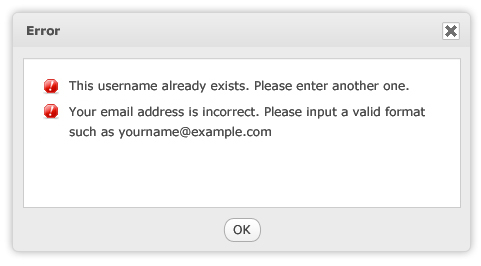
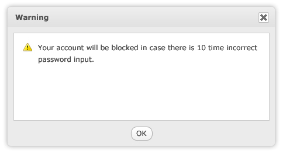
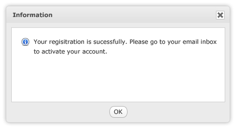
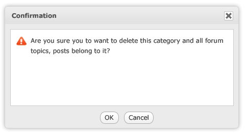

How to dialog with users and how display different kind of messages to them. What and when should they be used ?
Displaying a message to an user is a way to communicate with him, so as any communication it’s important to take care about the message and the way it will be displayed.
This pattern provides a guide to avoid creating unclear messages to users and correctly differentiate each kind of message.
Normally, a function includes a lot of cases to show messages to end users. During the development process, the developers and testers must be able to take cover all of them. It is a need to clarify what kind a message is to display it with correct content and template.
Messages in eXo products are grouped in 4 types:
    The priority to display messages is: Error - Warning - Information. The content of a message is put in white text box with style sheet:Message pop-up templates
Error Message Pop-up
Warning message pop-up
Information message pop-up
Confirmation message pop-up
For example, a form is submitted. There are 4 found problems: 2 errors and 2 warnings. The error pop up displays firstly. After errors are corrected, the warning pop-up display to users.Message Pop-up Style
Font Style
Verdana
Font Size
12
Font Color
#4C4C4C
Icon
icon-error, icon-information, icon-confirm, icon-warning
| Object | Style |
|---|---|
| Pop-up Title | Font Family: Verdana Font Size: 12px Font Weight: Bold Text Color: #4D4D4D Background: gradient |
| Pop-up Body | Background:#EDEDED |
| Text Content | Font Family: Veranda Font Size: 12px Font Weight: Normal Text Color:#4D4D4D |
| White Box Border | #E1E1E1 |
| Button | Mouse on: Dark gradient Mouse out: Light gradient |
Depending on the message types, the pop-up displays correspondingly.
What is error message?
An error message alerts users of a problem that has already occurred.
Effective error messages inform users that a problem occurred, explain why it happened, and provide a solution so users can fix the problem
Characteristic of a good message
A good error message should be relevant, brief, clear, specific, courteous and rare on:
A problem: States that a problem occurred
E.g: Your connection is time out
A cause: Explain why the probelm occurred
E.g: Your chosen User name already exists
A solution:Provides a solution so that users can fix the problem.
E.g:Please input a valid email format such as yourname@example.com
What should be avoided in an error message?
Unnecessary error message
E.g: This file has been already deleted
This error message should be elimiated because the action was successful from the user's point of view. It should be an information rather than an error.
Avoid too long and over communication error message
Most of users would like to scan rather than read many things in detail. So, avoid too long error message to explain a problem or provide a link in a error message and request users to read it.
Error messags that blame users
E.g: You have input an invalid user naem.
This kind of error message will make user fell rude.
Programmer error messages
Eg: Messages intended to help the program's developers find bugs are left in the release version of the program.
These error messages have no meaning or value to users
Handing unknown error
Any unknown error display that will make users feel your application is not reliable. Try to hand and provide a detailed message about invalid action.
Avoid Troubleshootings
Incorrect:

Correct:

What is Warning Message?
A warning message is to alert users of a condition that might cause a problem in the future.
Characteristic of a good warning message
Involve risk. Good warnings alert users of something significant.Have immediate relevance
E.g:The account will be blocked with 5 times incorrect password input to prevent hackers!
Lead to action. There is something users must do or be aware of as the result of the warning. Warnings without actions just make users feel paranoid.
E.g: Your account will be blocked! The message will make users confused and don't understand why?
Be clear and specific. Read the warning message, users can know:
What should be avoided in a warning message?
Redundant message
Overwarning that makes your program feel hazardous and look lije it was designed by lawyers.
What is Information Message?
An information message is to alert users useful and relevant, but never critical information. It like a notification to let user know a specific information.
E.g: Your account has been registered successfully. Please go to your email address box to activate your account.
Characteristic of a good information message
What should be avoided in an information message?
What is Confirmation Message?
A confirmation message is to ask if the user wants to proceed with an action.
The display of a confirmation can be in a default browser pop-up or in a customized pop up window like the same template above.
With the deletion confirmation that may damage to huge data such as delete a forum, all its topics/post will be lost. The confirmation should be a warning that display in a pop up (like the template above) rather than using browser pop-up to warn the importance of the current action.
Characteristic of a good confirmation message
If a confirmation involves risk, it can be considered a warning as well. It is great to use a customized pop-up window rather than a default browser pop-up.
What should be avoided in a confirmation message?
Messages is a way an application talk to end users. So, messages play an important role to make the success of an application.
Currently, the way to display messages in eXo is inconsistent and incorrect. This pattern is a useful reference to differentiate message types.
We need to use this pattern to improve message system in eXo. The consistency of message content, style sheet and design will make eXo products look more professional.